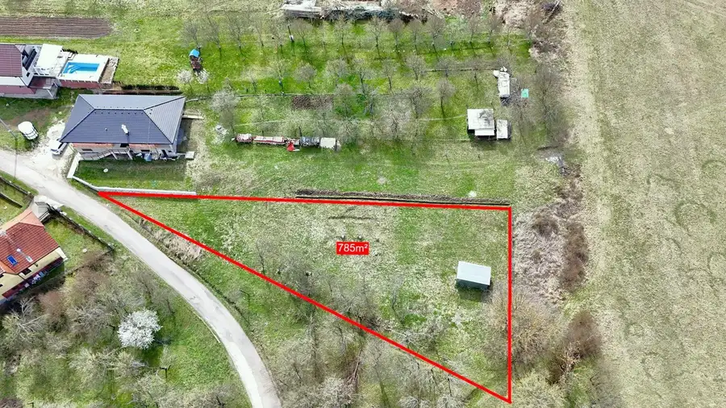
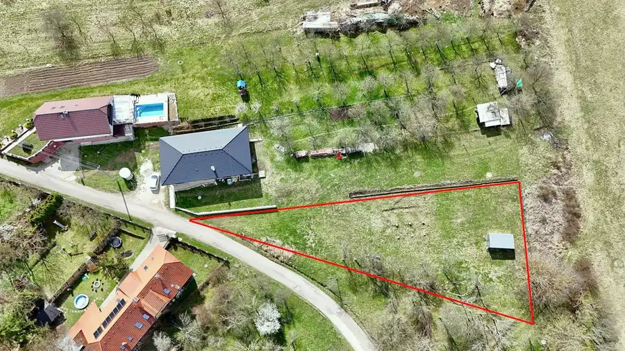
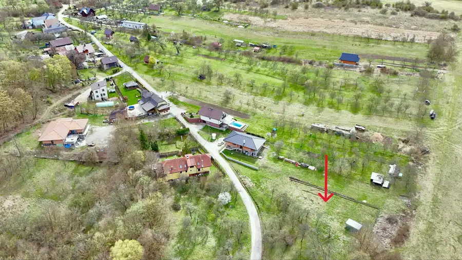
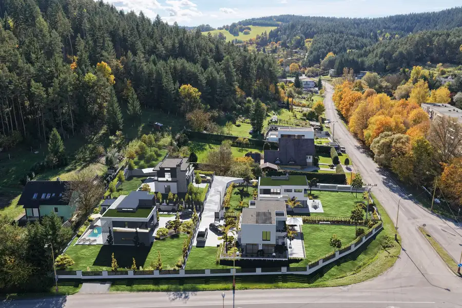
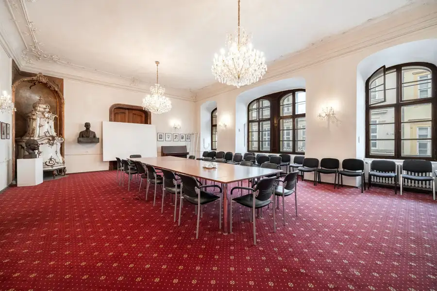
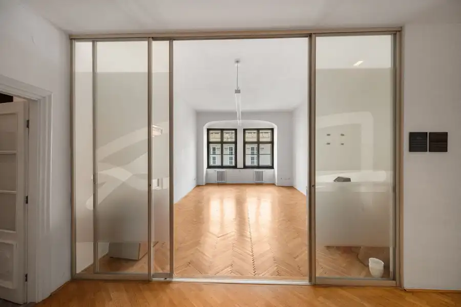

Stavebný pozemok Streženice
Streženice



- Plocha785 m²
- VlastníctvoOsobné
O nehnuteľnosti
TARGETreal Vám výhradne ponúka na predaj stavebný pozemok nachádzajúci sa v obci Streženice o výmere 785m².Pozemok je územným plánom obce určený na výstavbu rodinného domu. Nachádza sa v obci Streženice, miestna časť Štepnice, cca 2 km od mesta Púchov.O pozemku :• slnečný• v územnom pláne obce• pozemok určený na výstavbu RD• mierne svahovitý• výmera spolu 785m²• druh pozemku: TTP• parcela registra: C• prístup: obecná komunikácia• súkromné vlastníctvoInžinierske siete:• voda - potrebná realizácie studne• kanalizácia - potrebná realizácia žumpy• el. - určený bod napojenia• plyn - nieObčianska vybavenosť:V obci sa nachádza škôlka, škola, kostol, kultúrne stredisko, futbalové ihrisko, detské ihrisko, hasičská zbrojnica, obecný úrad, potraviny, pohostinstvo. Lokalita má výbornú dopravnú dostupnosť nielen autom, ale aj autobusom.Vzdialenosti:• Púchov cca 2km• Dialnica D1, smer BA/ZA cca 3kmV prípade otázok a dohodnutia si termínu obhliadky ma neváhajte kontaktovať :- tel. č. 0911 277 724- email: sabina.plevakova@targetreal.skTeším sa na obhliadky s Vami
Parametre
- Druh
- Pozemok pre rodinné domy
- Dátum zverejnenia
- 02. 10. 2026
- Plocha pozemku
- 785 m²
- Terén pozemku
- Mierne svahovitý
- Typ
- Predaj
- Vlastníctvo
- Osobné
Kde to je


Mohlo by Vás zaujímať

PozemokNové 134 400 €Na predaj, Stavebné pozemky s IS a prístupovou cestou v cene, Považská Bystrica - Hliny, TARGETreal Považská Bystrica 792 m²
Komerčné priestoryNové Cena na vyžádáníNa predaj, obchodné / kancelárske priesotory - 285,9m², Staré mesto Staré Mesto, Bratislava 285.9 m²
Komerčné priestoryNové Cena na vyžádáníNa predaj, kancelárske priestory , 285,6m², Staré mesto - Panská ul. Staré Mesto, Bratislava 285.9 m²